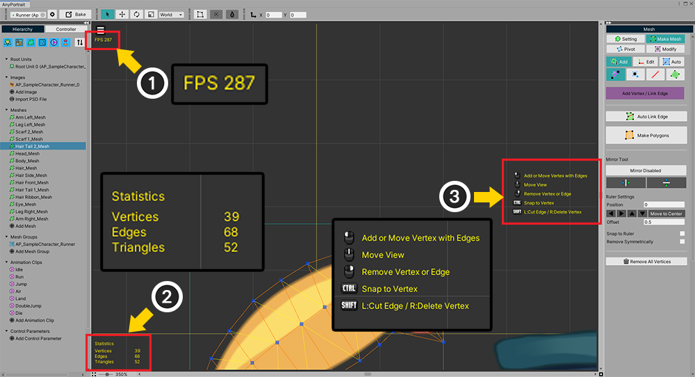
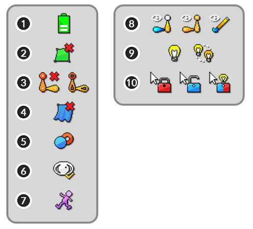

AnyPortrait > 메뉴얼 > 보기 메뉴와 상태 아이콘
보기 메뉴와 상태 아이콘
1.3.4
AnyPortrait v1.3.0에 추가된 보기 메뉴에는 작업 공간에서 오브젝트들이나 다른 요소들을 어떤 방식으로 출력할지를 제어하는 기능들이 있습니다.
이 페이지에서는 보기 메뉴에 어떤 기능들이 있는지 간단히 설명하고, 새로 추가된 상태 아이콘들에 대해서도 설명을 합니다.
보기 메뉴

작업 공간의 좌측 상단에 메뉴 버튼이 있습니다.
이 버튼을 누르면 보기 메뉴가 열립니다.

보기 메뉴입니다.
작업 공간과 관련된 여러가지 항목들이 있으며, 단축키가 있는 경우 같이 표시됩니다.
현재 선택된 오브젝트의 종류에 따라서 일부 메뉴가 보이지 않을 수도 있습니다.
일부 기능은 토글 방식이므로, 활성화된 상태에서 한번 더 누르면 비활성화됩니다.
1. Show FPS, Show Statistics, Show How to Edit : 작업 공간에 에디터나 오브젝트에 관련된 정보를 출력합니다.
2. Maximize Workspace : 작업 공간을 최대화합니다.
3. Invert Background Color : 작업 공간의 배경 색을 반전합니다.
4. Show Meshes : 메시들이 작업 공간에 보여집니다.
5. Show Bones, Show Bones' Outline : 본들이 작업 공간에 보여집니다. 외곽선만 보이게 설정할 수 있습니다.
6. Enable Physics : 물리 재질, 지글본(Jiggle Bone)이 동작합니다.
7. Onion Skin : 잔상(Onion Skin)과 관련된 메뉴들입니다. (관련 페이지)
8. Edit Mode Option : 편집 모드 옵션과 관련된 메뉴들입니다. (관련 페이지)
9. Visibility Preset : 보기 프리셋과 관련된 메뉴들입니다. (관련 페이지)
10. Rotoscoping : 로토스코핑과 관련된 메뉴들입니다. (관련 페이지)
11. Guidelines : 가이드라인과 관련된 메뉴들입니다. (관련 페이지)

보기 메뉴 중 일부 기능에 대한 설명입니다.
(1) Show FPS를 켜면 현재 에디터의 실행 성능을 나타내는 FPS (Frames per Second)가 출력됩니다.
(2) Show Statistics를 켜면 선택된 대상의 주요 데이터들이 나타납니다.
(3) Show How to Edit를 켜면 기본적인 기즈모를 사용하지 않는 작업 화면에서 어떤 방식으로 입력해야하는지에 대한 설명이 잠깐 나타납니다.
그 외의 기능들에 대해서는 관련된 페이지들을 참고해주세요.
상태 아이콘
(1) AnyPortrait v1.3.0에 추가된 상태 아이콘들 입니다.
(2) 현재 작업 공간에서 어떤 방식으로 오브젝트들이 출력되고 편집되는지에 대한 상태가 아이콘의 형태로 나타납니다.
(3) 아이콘에 마우스를 가져다대면 해당 상태에 대한 툴팁이 나타납니다. 단축키가 있는 경우 같이 표시됩니다.

상태 아이콘들입니다.
아이콘들은 "오브젝트 출력 방식"과 "편집 모드"에 대한 것으로 각각 묶여집니다.
왼쪽의 아이콘들은 오브젝트들의 출력 방식에 대한 정보를 의미합니다.
아이콘들 중 일부는 기본 상태에서는 나타나지 않으며, 특별한 경우에만 나타납니다.
(1) 노트북 사용자들을 위한 발열 방지용 CPU 최적화 기능이 켜져있으면 나타납니다. 이 기능은 설정 다이얼로그에서 켤 수 있습니다.
(2) Show Meshes를 꺼서 메시가 출력되지 않으면 나타나는 아이콘입니다.
(3) Show Bones를 끄거나 외곽선만 출력되게 설정하면 나타나는 아이콘입니다. 각각 "본이 보이지 않은 상태"와 "본의 외곽선만 보이는 상태"를 의미합니다.
(4) Enable Physics를 꺼서 물리 효과가 동작하지 않을 때 나타나는 아이콘입니다.
(5) 잔상(Onion Skin)이 켜진 상태입니다.
(6) 보기 프리셋이 켜진 상태입니다.
(7) 로토스코핑이 켜진 상태입니다.
오른쪽의 아이콘들은 편집 모드에서의 상태를 의미합니다.
자세한 내용은 관련 페이지를 참고해주세요.
(8) 결과 미리보기에 대한 상태입니다. 각각 "본과 색상 미리보기", "본 미리보기", "색상 미리보기"를 의미합니다.
(9) "선택된 모디파이어만 동작"하는지 또는 "다른 모디파이어들도 같이 동작"하는지에 대한 아이콘들입니다.
(10) 선택 잠금에 대한 상태입니다. 각각 "다른 객체 선택 불가", "다른 객체 선택 가능", "모디파이어에 포함된 객체들만 선택 가능"을 의미합니다.
작업 공간의 배경색 반전하기
1.3.4
이미지가 어두운 색상으로 그려진 경우, 작업 공간의 배경과 이미지를 구분하기 어려울 수 있습니다.
특히 메시를 만들 때, 이러한 어려움은 크게 느껴집니다.
작업 공간의 색상을 반전하여 이러한 문제를 해결할 수 있습니다.
(1) 작업 공간과 구분하기 어려운 이미지를 준비했습니다. 이미지의 가장자리가 선명하게 구분되지 않습니다.
(2) 보기 메뉴를 엽니다.
(3) Invert Background Color (단축키 Alt+I ) 옵션을 켜봅시다.
작업 공간의 배경이 밝은 색으로 바뀌었습니다.
이제 이미지의 가장자리를 쉽게 구분할 수 있게 되었습니다.
(원래 색상으로 돌아가려면 보기 메뉴에서 이 옵션을 끄거나 다시 Alt+I 를 눌러주세요.)

반전되는 배경 색상을 설정 다이얼로그에서 변경할 수 있습니다.